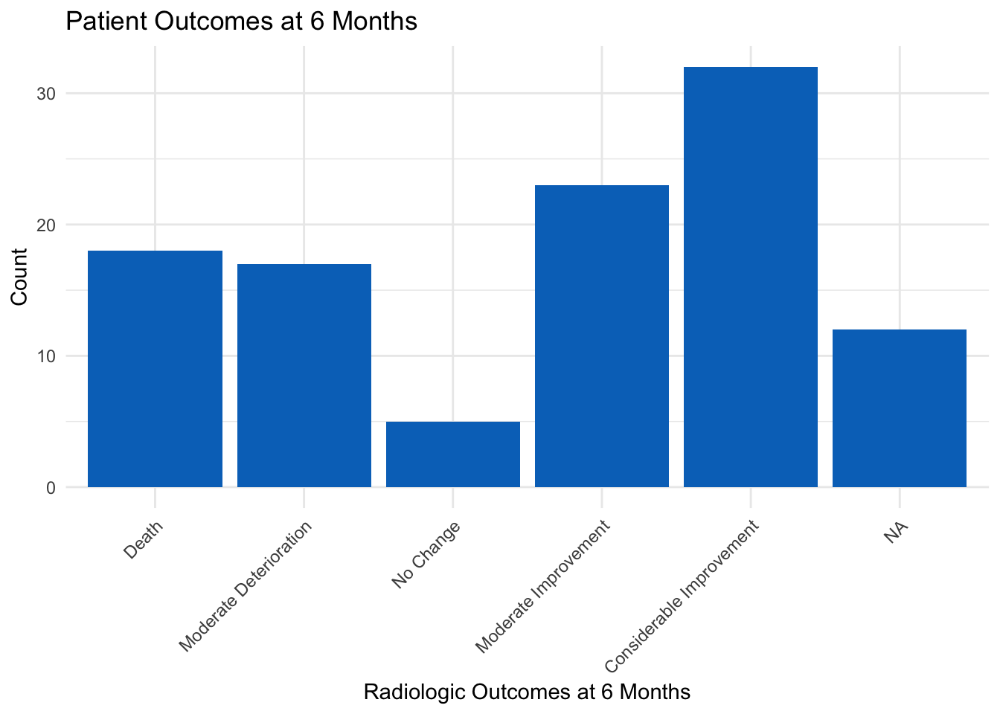

Characteristic |
Total 1 |
Control |
Streptomycin |
p-value 2 |
|---|---|---|---|---|
| Gender | >0.9 | |||
| Male | 48 (45%) | 24 (46%) | 24 (44%) | |
| Female | 59 (55%) | 28 (54%) | 31 (56%) | |
| Condition of the Patient at Baseline | 0.7 | |||
| Good | 16 (15%) | 8 (15%) | 8 (15%) | |
| Fair | 37 (35%) | 20 (38%) | 17 (31%) | |
| Poor | 54 (50%) | 24 (46%) | 30 (55%) | |
| Oral Temperature at Baseline (Degrees F) | 0.8 | |||
| <=98.9F/37.2C | 7 (6.7%) | 4 (7.7%) | 3 (5.7%) | |
| 99-99.9F/37.3-37.7C | 24 (23%) | 12 (23%) | 12 (23%) | |
| 100-100.9F/37.8-38.2C | 31 (30%) | 17 (33%) | 14 (26%) | |
| >=101F/38.3C | 43 (41%) | 19 (37%) | 24 (45%) | |
| Missing | 2 | 0 | 2 | |
| Erythrocyte Sedimentation Rate at Baseline (millimeters per hour) | 0.5 | |||
| 1-10 | 0 (0%) | 0 (0%) | 0 (0%) | |
| 11-20 | 5 (4.7%) | 2 (3.9%) | 3 (5.5%) | |
| 21-50 | 36 (34%) | 20 (39%) | 16 (29%) | |
| 51+ | 65 (61%) | 29 (57%) | 36 (65%) | |
| Missing | 1 | 1 | 0 | |
| Cavitation of the Lungs on Chest X-ray at Baseline | 62 (58%) | 30 (58%) | 32 (58%) | >0.9 |
| Resistance to Streptomycin at 6 months | <0.001 | |||
| Sensitive 0-8 | 65 (61%) | 52 (100%) | 13 (24%) | |
| Moderate 8-99 | 8 (7.5%) | 0 (0%) | 8 (15%) | |
| Resistant 100+ | 34 (32%) | 0 (0%) | 34 (62%) | |
| Radiologic Outcome at 6 months | <0.001 | |||
| Death | 18 (19%) | 14 (30%) | 4 (8.2%) | |
| Considerable Deterioration | 0 (0%) | 0 (0%) | 0 (0%) | |
| Moderate Deterioration | 17 (18%) | 12 (26%) | 5 (10%) | |
| No Change | 5 (5.3%) | 3 (6.5%) | 2 (4.1%) | |
| Moderate Improvement | 23 (24%) | 13 (28%) | 10 (20%) | |
| Considerable Improvement | 32 (34%) | 4 (8.7%) | 28 (57%) | |
| Missing | 12 | 6 | 6 | |
| 1
n (%) |
||||
| 2
Pearson’s Chi-squared test |
||||
EPI 590R Final Project
The data used in this analysis are from a 1948 study in the British Medical Journal conducted by the Tuberculosis Trial Committee. This data set contains baseline characteristics and outcomes for 107 participants. In this randomized, placebo-controlled clinical trial, the treatment group received a daily dose of 2 grams of streptomycin to treat pulmonary tuberculosis compared to the placebo group, which did not receive streptomycin.
Analysis
Table of Descriptive Statistics
Table 1 is a table of descriptive statistics for a variety of categorical variables. A greater proportion of patients in the streptomycin arm (28 (57%)) showed considerable improvement at the end of the trail compared to those in the control arm (4 (8.7%)). The mean chest x-ray rating for all 107 participants at the end of the trial was 3.9252336.
Multivariate Logistic Regression Table
Characteristic |
OR 1 |
95% CI 1 |
p-value |
|---|---|---|---|
| Condition of the Patient at Baseline | |||
| Good | — | — | |
| Fair | 1.36 | 0.21, 9.52 | 0.8 |
| Poor | 1.04 | 0.06, 17.6 | >0.9 |
| Oral Temperature at Baseline (Degrees F) | |||
| <=98.9F/37.2C | — | — | |
| 99-99.9F/37.3-37.7C | 2.16 | 0.30, 18.0 | 0.5 |
| 100-100.9F/37.8-38.2C | 0.57 | 0.05, 5.88 | 0.6 |
| >=101F/38.3C | 0.44 | 0.04, 4.71 | 0.5 |
| Erythrocyte Sedimentation Rate at Baseline (millimeters per hour) | |||
| 11-20 | — | — | |
| 11-20 | — | — | |
| 21-50 | 0.34 | 0.03, 3.16 | 0.4 |
| 51+ | 0.99 | 0.06, 14.9 | >0.9 |
| Cavitation of the Lungs on Chest X-ray at Baseline | |||
| Yes | — | — | |
| No | 1.69 | 0.44, 7.19 | 0.5 |
| Resistance to Streptomycin at 6 months | |||
| Sensitive 0-8 | — | — | |
| Moderate 8-99 | 1.85 | 0.26, 14.8 | 0.5 |
| Resistant 100+ | 1.81 | 0.51, 6.98 | 0.4 |
| Radiologic Outcome at 6 months | |||
| Death | — | — | |
| Moderate Deterioration | 0.69 | 0.12, 3.75 | 0.7 |
| No Change | 0.13 | 0.01, 1.44 | 0.10 |
| Moderate Improvement | 0.67 | 0.10, 4.35 | 0.7 |
| Considerable Improvement | 0.31 | 0.05, 1.81 | 0.2 |
| 1
OR = Odds Ratio, CI = Confidence Interval |
|||
Table 2 is a table of odds ratios, 95% confidence intervals and p-values for the gender regressed on patients’ baseline condition, baseline oral temperature, erythrocyte sedimentation rate, cavitation of the lungs, resistance to streptomycin, and radiologic outcome after 6 months follow-up.
Figure of Patient Outcomes

Figure 1 is a bar graph of patients’ radiologic outcomes after a 6-month follow up period for both study arms.